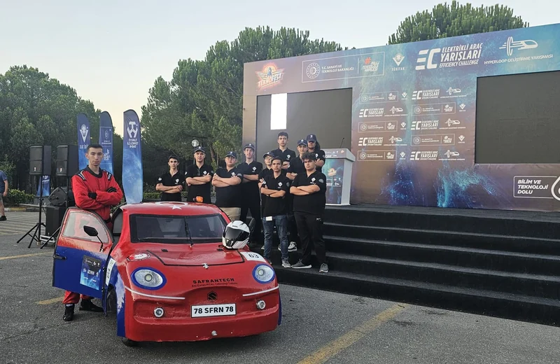

FRC 2025
Hydra — FRC 2025 Robotu
2025 sezonunda kullanılan Hydra, takımın FRC yolculuğunda öne çıkan yarışma robotudur. Ankara Regional'da Regional Winners başarısına ulaşan sezonda kullanılan robot yazılımı Java tabanlı olarak geliştirildi.